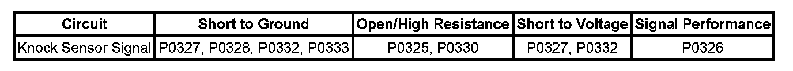

P0330
DTC P0324, P0325, P0326, P0327, P0328, P0330, P0332, or P0333
DIAGNOSTIC INSTRUCTIONS
- Perform the Diagnostic System Check - Vehicle prior to using this diagnostic procedure. Initial Inspection and Diagnostic Overview
- Strategy Based Diagnosis
- Diagnostic Procedure Instructions.
DTC DESCRIPTORS
DTC P0324
Knock Sensor (KS) Module Performance
DTC P0325
Knock Sensor (KS) Circuit Bank 1
DTC P0326
Knock Sensor (KS) Performance
DTC P0327
Knock Sensor (KS) Circuit Low Voltage Bank 1
DTC P0328
Knock Sensor (KS) Circuit High Voltage Bank 1
DTC P0330
Knock Sensor (KS) Circuit Bank 2
DTC P0332
Knock Sensor (KS) Circuit Low Voltage Bank 2
DTC P0333
Knock Sensor (KS) Circuit High Voltage Bank 2
DIAGNOSTIC FAULT INFORMATION

Perform the Diagnostic System Check - Vehicle prior to using this diagnostic procedure. Initial Inspection and Diagnostic Overview
CIRCUIT/SYSTEM DESCRIPTION
The knock sensor (KS) system enables the engine control module (ECM) to control the ignition timing for the best possible performance while protecting the engine from potentially damaging levels of detonation. The ECM monitors 2 separate KS, one on each side of the engine block. Each KS produces an AC voltage that varies, depending on the vibration levels detected during engine operation. The ECM receives the KS signal through two isolated signal circuits for each KS. The ECM adjusts the spark timing based on the amplitude and frequency or each KS signal.
CONDITIONS FOR RUNNING THE DTC
- DTC P0324 runs continuously when the engine speed is greater than or equal to 1,500 RPM and the engine load is greater than a calibrated amount.
- DTC P0326 runs continuously when:
- The engine speed is greater than or equal to 500 RPM
- The MAP is greater than 55 kPa
- DTCs P0120, P0121, P0122, or P0123 are not set
- DTCs P0325, P0327, P0328, P0330, P0332, and P0333 run continuously when:
- The engine coolant temperature (ECT) is greater than -40°C (-40°F)
- The engine run time is greater than 1 second
- The power take-off (PTO) is not active
CONDITIONS FOR SETTING THE DTC
P0324
The ECM has detected an internal circuitry fault.
P0325 and P0330
The KS signal circuits are open or shorted together for 5 seconds.
P0326
- The KS signal indicates an engine knock is present.
- The ECM has commanded the spark retard to a value, which is more than the calibrated value, for a specific engine load and speed.
- The above conditions exist for more than 5 seconds.
P0327, P0328, P0332, and P0333
The KS signal circuits are shorted to voltage or ground.
ACTION TAKEN WHEN THE DTC SETS
- DTCs P0324, P0325, P0326, P0327, P0328, P0330, P0332, and P0333 are Type B codes.
- The ignition timing is retarded to reduce the potential of engine damaging spark knock.
CONDITIONS FOR CLEARING THE DTC
DTCs P0324, P0325, P0326, P0327, P0328, P0330, P0332, and P0333 are Type B codes.
DIAGNOSTIC AIDS
- Inspect the KS for physical damage. A KS that is dropped or damaged may cause a DTC to set.
- Inspect the KS for proper installation. A KS that is loose or over-torqued may cause a DTC to set.
- The KS mounting surface should be free of burs, casting flash, and foreign material.
CIRCUIT/SYSTEM TESTING
P0324
IMPORTANT: If DTCs P0325, P0326, P0327, P0328, P0330, P0332, or P0333 are also set, diagnostics those DTCs first.
DTC P0324 indicates an internal control module circuitry failure. Replace the ECM.
P0325, P0327, P0328, P0330, P0332, P0333
1. Ignition ON, engine OFF.
2. Disconnect the appropriate KS harness connector.
3. Measure for 2-3 volts between each of the following circuits and ground on the ECM side of the harness connector:
- The KS signal circuit, terminal A
- The KS signal circuit, terminal B
- If less than the specified range, test the circuits for a short to ground or an open/high resistance. If the circuits test normal, replace the ECM.
- If greater than the specified range, test the circuits for a short to voltage. If the circuits test normal, replace the ECM.
4. If all circuits test normal, replace the KS.
P0326
- Inspect for a loose or broken engine mount, engine mounted accessory, or accessory mounting bracket.
IMPORTANT: If DTCs P0325, P0327, P0328, P0330, P0333, P0335 or P0336 are also set, diagnose those DTC first.
- Inspect for excessive engine mechanical noise. Refer to Symptoms - Engine. - Symptoms - Engine Mechanical
COMPONENT TESTING
1. Connect a DMM to both KS signal circuit terminals A and B at the KS.
2. Set the DMM to the 400 mV AC hertz scale and wait for the DMM display to stabilize at 0 Hz.
3. IMPORTANT: DO NOT tap on plastic engine components.
Tap on the engine block with a non-metallic object near the KS while observing the signal indicated on the DMM.
4. The DMM should display a fluctuating frequency while tapping on the engine block.
REPAIR INSTRUCTIONS
Perform the Diagnostic Repair Verification after completing the diagnostic procedure.
- Knock Sensor 1 Replacement or Knock Sensor 2 Replacement
- Control Module References for ECM replacement, setup, and programming. Verification Tests